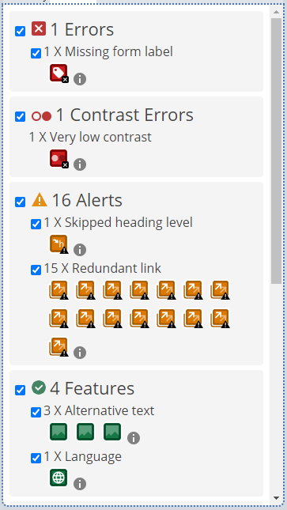
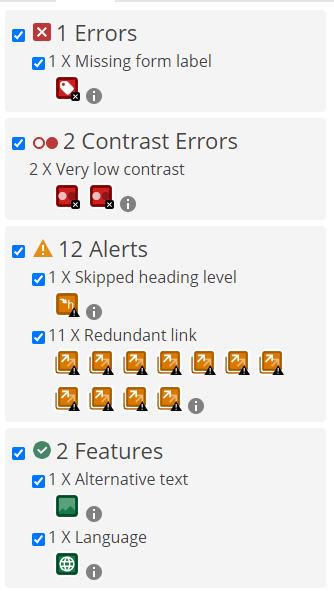

UU - Accessibility
Front page
På forsiden fikk jeg en rød error, en contrast error og 16 oransje alerts. Erroren jeg fikk var for en manglende label til min form, som blir brukt som søkefelt. Contrast error peker på teksten på banneret, det er for dårlig kontrast mellom tekst og bakgrunn og dette kan føre til problemer for eksempel svaksynte.
Den første oransje varslingen er for en skipped heading level, her har jeg tatt i bruk h1, og h3, uten å bruke h2 noe sted. De 15 andre varslene er alle for redundant links, dette skjer fordi mange linker går til samme url, men dette er formålet i akkurat denne oppgaven, så disse varslingene vil bli ignorert.

Produktside
På produktsiden er det mye av det samme, siden header og footer er identisk på alle sidene. Her ser vi igjen rød error for form, skipped heading level og redundant links. I tillegg til disse har vi to nye contrast errors. Disse tar for seg «klikk og hent» og «handlekurv» knappene, som jeg i ettertid kan se at har dårlig kontrast.

Om oss side
På den siste siden, har vi kun de samme feilene fra header og footer: form, skipped heading level og redundant links. Siden denne siden er relativt simpel i forhold til de andre, er det ingen nye feil her.